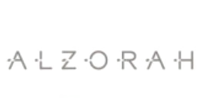
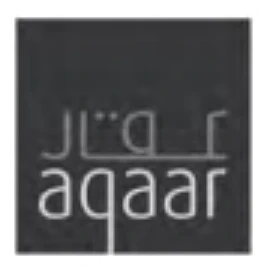
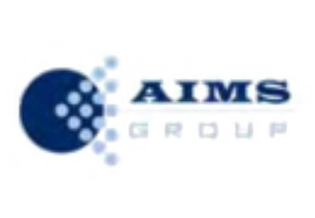
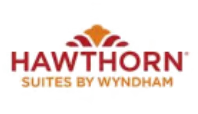
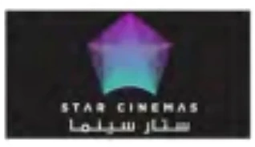

We are an architecture, engineering and project management practice in Ajman.
One office, one team, and selected work across the Emirates since 2006.
A city is not a set of sectors. It is where people learn, shop, work and live — and here we have drawn all four. The schools our clients’ children attend, the malls their neighbourhoods use, the offices they work in and the homes they return to were, often enough, drawn by the same practice.
Ajman Municipality and Planning Department awarded us a five-star rating in 2023.
| Ajman Sewerage | |
| Federal Electricity & Water Authority | |
| General Authority of Islamic Affairs & EndowmentsAl Ghala Mosque | |
| Government of AjmanSouk Salah |
| Ajman American Private School | |
| City School | |
| City University | |
| Frontline International Private School | |
| Habitat Group of Schools | |
| Woodlem Park Private School |
 |
Al Zorah Development |
 |
Aqaar Real Estate |
| BAHR | |
| Charterstates | |
| CityLife | |
| G Real Estate | |
| Prestige Constructions | |
| PropertyTech | |
| R HoldingThe Black Square | |
| R SelectCity Life, Al Tallah | |
| Talal Holdings |
 |
AIMS Group |
| Ajman Bank | |
| Al Arabia | |
| City Mall | |
 |
Hawthorn Suites by Wyndham |
| KENZ Hypermarket | |
| LuLu | |
| Ramada | |
| Safari Mall | |
 |
Star Cinemas |
| Thumbay |
| Founding year | 2006 |
|---|
We hire architects, engineers and project managers into the same office as everyone else. If that is the way you want to work, write to us.
Have a project in mind? Let’s talk.
Contact